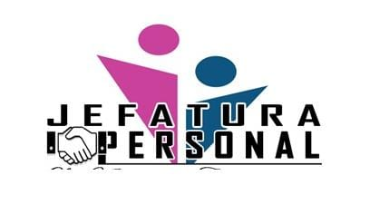

El Sistema Web de Gestión de Licencias y Vacaciones Docentes de la Universidad Nacional "Siglo XX" (UNSXX) es una plataforma informática institucional creada para sistematizar, digitalizar y transparentar la solicitud, revisión jerárquica y aprobación final de permisos y licencias del personal docente universitario.
En estricto cumplimiento del reglamento universitario y la normativa laboral vigente, el sistema calcula de forma automática y transparente el derecho a vacaciones según los años cumplidos de antigüedad laboral a partir de la Fecha de Ingreso oficial del docente:
| Tiempo de Servicio en la Institución | Días Hábiles Asignados | Observación Reglamentaria |
|---|---|---|
| De 0 a 1 año cumplido | 0 días | Periodo de acumulación de antigüedad laboral reglamentaria. |
| De 1 año y 1 día a 5 años cumplidos | 15 días hábiles | Primer escalafón de vacación anual. |
| De 5 años y 1 día a 10 años cumplidos | 20 días hábiles | Segundo escalafón de vacación anual. |
| Más de 10 años cumplidos y 1 día | 30 días hábiles | Escalafón máximo de vacación anual para personal docente titular. |
| Personal a Contrato (Plazo Fijo) | 0 días | Los contratos eventuales no acumulan saldo de vacación anual regular. |
El sistema implementa una jerarquía institucional organizada en cuatro niveles de acceso:
| Rol | Prefijo de Código | Funciones y Responsabilidades |
|---|---|---|
| Docente | DOC... |
Consulta su saldo de vacaciones, registra solicitudes de licencia de jornada completa o medio día, cancela solicitudes no atendidas e imprime su historial oficial de licencias. |
| Director de Carrera | DRC... |
Revisa y resuelve en primera instancia las solicitudes de los docentes de su carrera. Sus propias licencias pasan a conocimiento de Dirección de Área. |
| Director de Área | DRA... |
Revisa solicitudes de directores de carrera y docentes de carreras directamente dependientes del área. Sus solicitudes propias van a Jefatura. |
| Jefatura de Personal | JEF... |
Administrador supremo. Gestiona el padrón docente, emite la decisión final con descuento automático de saldo, genera copias de seguridad y administra la base de datos. |
Abra el navegador web (Google Chrome, Microsoft Edge, Firefox) e ingrese a la dirección: https://licencias-unsxx26.onrender.com.
Ingrese su Código Único (ej. DOC001, JEF001) o su correo electrónico institucional, acompañado de su contraseña personal.
Desde la pestaña "Mi perfil", puede subir una fotografía en formato JPG o PNG (máximo 2 MB). Si desea eliminar su fotografía, presione el botón "✕ Quitar foto y usar silueta por defecto" de forma directa.
En "Configuración" ➔ "Cambiar contraseña", puede actualizar su clave de acceso ingresando su contraseña actual y la nueva contraseña (mínimo 6 caracteres).
Al ingresar al panel de inicio, el docente encontrará la tarjeta oficial de vacaciones:
Presione el botón dorado "Nueva solicitud" en la parte superior o desde el menú lateral.
• Fecha de inicio y Fecha de fin.
• Jornada: Seleccione Jornada completa (días enteros), Solo la mañana o Solo la tarde (medio día).
Escriba el motivo claro de la solicitud y presione "Enviar solicitud". El registro se efectúa inmediatamente sin diálogos emergentes ni demoras.
El módulo de solicitudes está organizado en dos pestañas claras:
Dentro de la pestaña "Historial", el docente cuenta con el botón "Imprimir historial de licencias".
Los directores de carrera y de área tienen la potestad de revisar las solicitudes del cuerpo docente bajo su dependencia:
En el menú lateral "Solicitudes" verá un número con las solicitudes pendientes de su carrera o área.
Al hacer clic en la solicitud, visualice las fechas solicitadas, el motivo expresado y el saldo disponible del docente.
• Aprobar: Seleccione "Aprobar solicitud" y presione "Registrar decisión". La solicitud pasa a la siguiente instancia.
• Rechazar: Seleccione "Rechazar solicitud", ingrese la fundamentación del rechazo y presione "Registrar decisión".
La Jefatura de Personal es el administrador general del sistema y la autoridad competente para otorgar la aprobación definitiva de licencias y el descuento de vacaciones.
Desde el módulo "Docentes" se realizan las operaciones de personal:
DOC005).En la pestaña "Pendientes de Jefatura" se encuentran las solicitudes listas para resolución:
En "Configuración" ➔ "Avisos al celular", la Jefatura puede registrar su número telefónico para recibir notificaciones inmediatas de solicitudes docentes entrantes.
En el menú "MI CUENTA" ➔ "Copia de seguridad":
1. ¿Qué sucede si solicito una licencia de medio día en la mañana y otra en la tarde?
Cada medio día resta 0.5 días. Al completarse dos solicitudes aprobadas de medio día, el sistema habrá descontado exactamente 1.0 día entero de su saldo.
2. ¿Por qué mi usuario figura con 0 días disponibles?
Puede ocurrir si su antigüedad es menor a 1 año cumplido más 1 día, si ya consumió todos sus días asignados de la gestión, o si su tipo de contrato es a plazo fijo ("Docente a Contrato").
3. ¿Cómo exporto el historial de licencias a PDF?
En la pantalla de impresión, presione Ctrl + P (o el botón Imprimir) y seleccione como destino "Guardar como PDF".
4. ¿El sistema muestra ventanas emergentes molestas?
No. Todas las acciones de envío, cancelación, aprobación y rechazo están configuradas para ejecutarse de forma **directa e inmediata**.